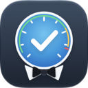

Settings that belong to one logbook live in its Logbook Settings sheet. Choose Audit ▸ Logbook Settings… (⌥⌘,). Four pages sit along the top; click Done to keep your changes.
SF50, C510.Look Up… fills in your certificate and ratings from the FAA’s releasable airmen database. It searches by name. The database is large, so downloading and searching it can take several minutes; Download and Search fetches it, or Search Downloaded Database… uses a copy you already have. Pick the match and click Use Certificates.
The checks read particular fields, such as night takeoffs or the safety pilot, but LogTen lets you name your own. Tell the app which of your fields plays each role. Fields are matched to the titles you gave them in LogTen, and Suggest from Field Titles fills in the obvious ones. A rule that needs a role you haven’t mapped can’t run.
Select an aircraft to set its other registrations, ICAO address, whether it is IFR capable, a type rating, whether it requires a 61.58 proficiency check, and its simulator credit. Track detection speeds can be overridden for one aircraft here.